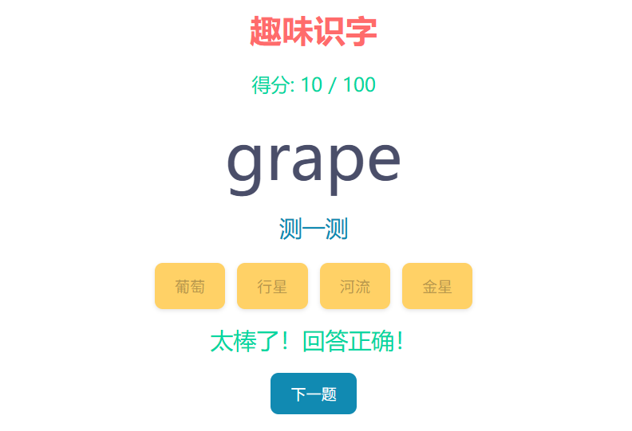
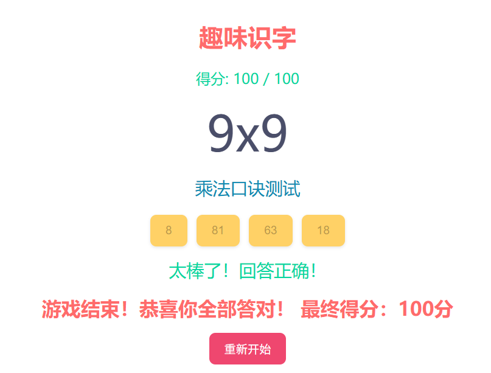
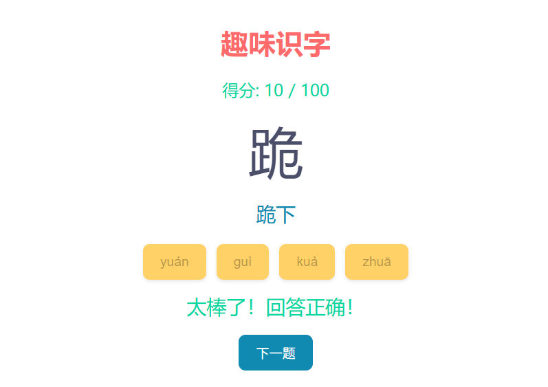

儿童趣味识字
对于我们做家长的来说，孩子当前的学习情况如何，知识量到底掌握了多少，这都是我们最关心的问题，
但很多情况下我们没有办法自定义测试孩子对知识的掌握情况，
我家小孩7岁，现在刚上大班，为了测试他认识了多少汉字，又防止他反感，于是我就做了这么一个html格式的应用，便于我测试他对汉字的掌握情况，
当做完这个工具后，我发现，其实放在其他学科，这些也是可以通用的，只需要替换题库的内容即可：
功能一：多学科适用
无论是测试汉字，还是英语单词，又或者是数学题，只需要替换数据文件即可（具体的使用教程我同文件放在了一起，需要的自行获取【百度网盘】）
【真实效果】
我家孩子刚学完拼音和简单汉字，就是用它检测，等后面英语单词学起来，把题库换成英语单词，照样能测；数学题也适用，一物多用。
功能二：自定题库
可以根据孩子的教材和学习进度，自定义题库，测试内容完全贴合孩子的实际学习情况。
把教材上的生字词、单词或数学公式导入进去，就能针对性地检测学习效果。
我把这个工具分享给了我的朋友，朋友的孩子使用这个工具时，她直接把语文课本后生字表导入题库，使用效果也还是很明显的。
【使用场景】
每次单元学习结束后，用教材配套的题库进行全面检测，找出薄弱环节，有针对性地强化练习。
功能三：简单易用
这个界面操作非常简单，只需要准备一个Excel表格，导入题目，就能开始测试。
任何家长都能轻松上手，界面友好，孩子操作起来也很简单。

在平时的家庭作业辅导前，先用这个工具做个小测试，找准孩子的“知识缺口”，再针对性地进行辅导，事半功倍。
每次看到孩子因为精准复习而进步，那种成就感是无法替代的。
了解孩子真正掌握了什么，没掌握什么，才是辅导的第一步。
如果你也有需要，不妨试一试，这个是完全免费的，希望对大家有所帮助~
我已经将工具放在这里，需要的自行获取：百度网盘